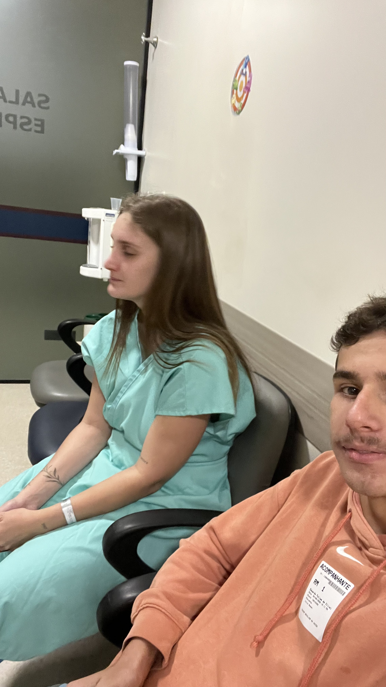

Talvez a gente tenha entrado aqui procurando uma imagem, mas eu gosto de pensar que, no fundo, eu só queria encontrar mais uma lembrança nossa.
Uma lembrança.
Porque existem momentos pequenos que parecem simples quando acontecem, mas que depois ganham um lugar enorme dentro da gente. E estar ao seu lado naquele dia é um deles.
Um momento.
Um daqueles momentos em que eu percebo que não preciso de nada extraordinário para ser feliz. Às vezes, basta você estar perto de mim para um dia comum se transformar em uma memória que eu nunca quero perder.
Você.
PROFUNDIDADE DO EXAME0%

SCAN #0823 // REF: RESS-VERDE
> IMAGEM REGISTRADA.
ANÁLISE CONCLUÍDA
PEQUENA LESÃO:DETECTADA
SAUDADE:DETECTADA
CARINHO:ELEVADO
AMOR:FORA DA ESCALA ❤️
"Mas, pensando bem..."
"Talvez aquela ressonância tenha encontrado outra coisa."
"Porque existem marcas que nenhum exame consegue mostrar."
Eu lembro de estar com você naquele dia e penso em como algumas situações, mesmo quando parecem pequenas, conseguem mostrar exatamente o que uma pessoa significa para a gente. Você estava ali, passando por um exame, usando aquela roupa verde que acabou virando parte de uma lembrança que eu guardaria com muito carinho. E eu estava ali com você. Não porque precisava existir alguma coisa grandiosa acontecendo, mas simplesmente porque eu queria estar.
Eu lembro daquele ambiente, daquele momento e, principalmente, de você. No meio de uma situação que poderia ser apenas mais um exame, acabou existindo uma lembrança que hoje tem um significado enorme para mim. E talvez seja justamente isso que eu mais gosto em nós: até os dias mais comuns acabam encontrando uma maneira de virar alguma coisa especial quando eu estou com você.
Estar com você também me ensinou que carinho não precisa de grandes demonstrações. Às vezes ele está simplesmente em acompanhar, esperar, perguntar se está tudo bem e permanecer por perto. Eu gosto de poder ser essa pessoa para você. Gosto de saber que, quando alguma coisa te deixa insegura ou assustada, eu posso estar ali. Mesmo que eu não consiga resolver tudo, pelo menos você não precisa passar por aquilo sozinha.
E eu espero que você saiba que estar ao seu lado nunca foi uma obrigação para mim. Eu estava ali porque queria. Assim como eu quero estar nas suas conquistas, quero estar nos seus dias difíceis também. Quero estar quando você estiver feliz, quando estiver nervosa, quando estiver cansada, quando precisar de alguém e até quando você disser que não precisa de ninguém, mas ainda assim quiser que eu fique por perto. Porque amar você, para mim, também é escolher estar.
A ressonância consegue mostrar coisas que estão dentro do corpo. Consegue encontrar detalhes, imagens e sinais que nossos olhos não conseguem enxergar. Mas, por mais avançada que seja qualquer máquina, existe uma coisa que ela nunca conseguiria encontrar: tudo aquilo que você deixou dentro de mim. Nenhum exame conseguiria medir o carinho que eu sinto, a saudade que aparece quando você não está, a paz que eu sinto quando você está perto ou o quanto a minha vida ficou mais bonita depois que você passou a fazer parte dela.
> ESCANEANDO CAMADAS PROFUNDAS...
---
ANÁLISE FINALIZADA.
Resultado impossível de medir.
Algumas coisas podem ser vistas em uma ressonância.
Um osso.
Uma lesão.
Uma imagem.
Mas aquilo que eu sinto quando estou com você...
...não cabe em nenhuma máquina.
Você deixou marcas em mim.
E essas eu espero que nunca desapareçam.
❤️
E talvez essa seja a parte mais importante de tudo isso: eu não preciso de uma máquina para saber o quanto você é importante para mim. Eu sei porque sinto. Sinto quando lembro de você do nada e sorrio sozinho. Sinto quando alguma coisa acontece e a primeira pessoa que eu quero contar é você. Sinto quando estou com você e percebo que não preciso que aquele momento seja perfeito, porque a sua presença já faz ele valer a pena. Obrigado por cada momento em que você deixou eu estar perto, por cada lembrança que construímos e por todas as que ainda vamos construir. Eu quero continuar sendo a pessoa que fica ao seu lado, não apenas quando tudo está bem, mas também quando o dia estiver difícil. Quero continuar cuidando de você, rindo com você, fazendo você rir e guardando cada pequeno pedaço da nossa história. Porque, no fim, talvez a coisa mais bonita que essa ressonância pudesse ter encontrado não fosse nada dentro do seu pé. Fui eu percebendo, mais uma vez, o quanto existe de você dentro da minha vida. E eu espero que exista por muito, muito tempo. Eu amo você, minha princesa. ❤️